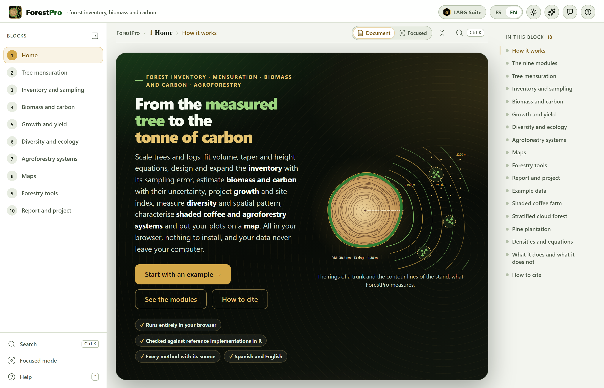
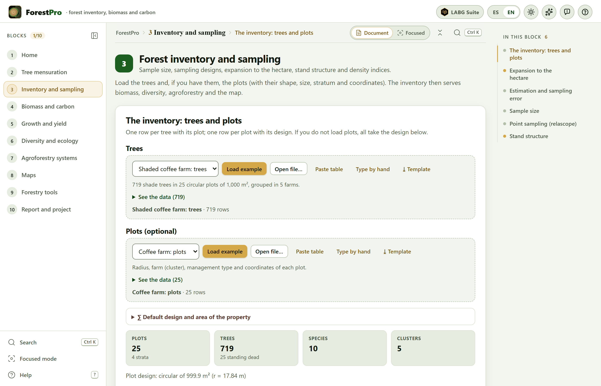
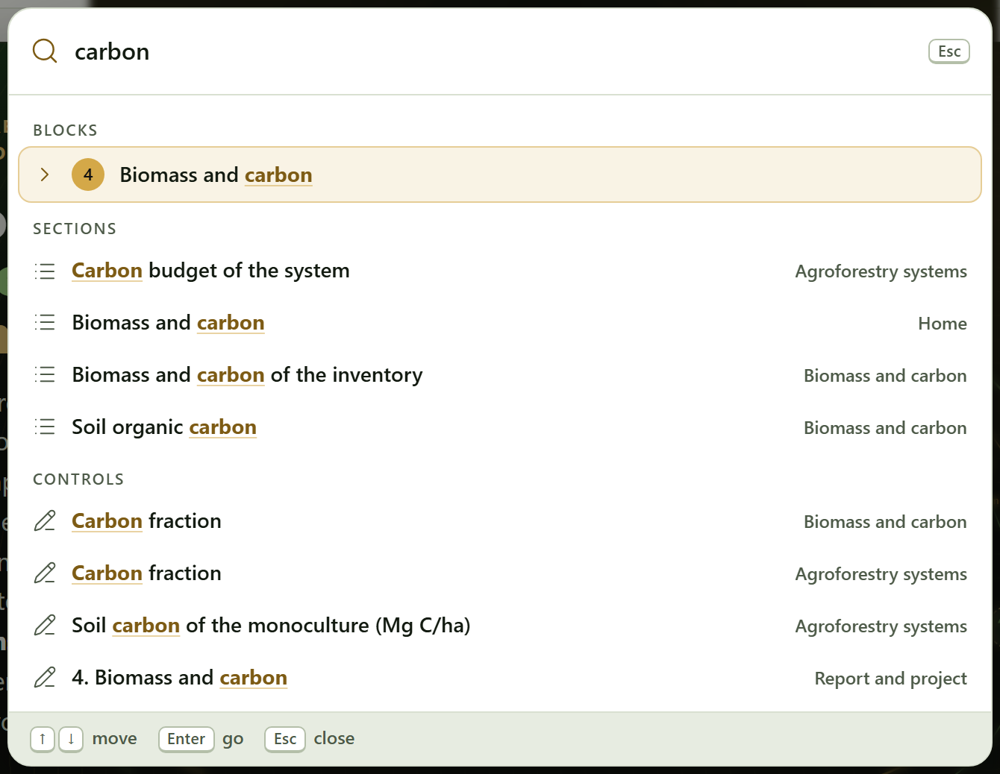
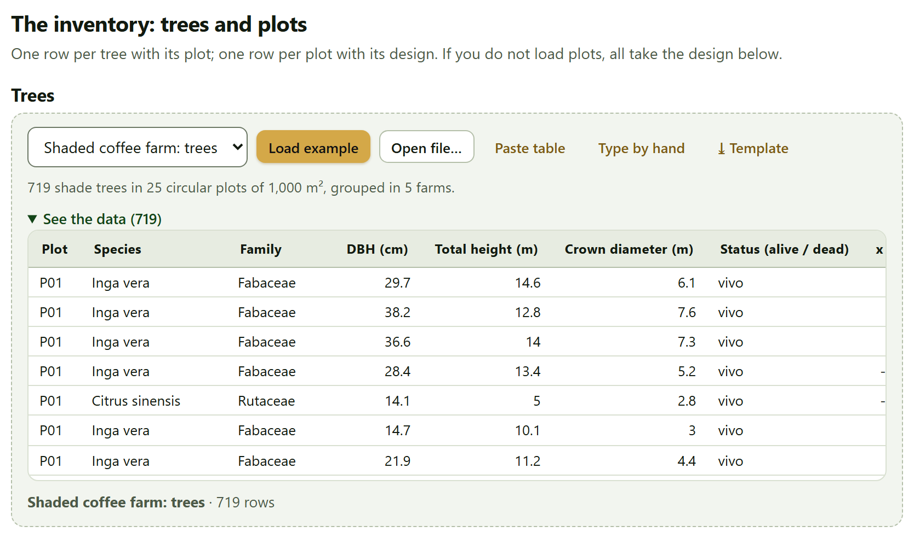
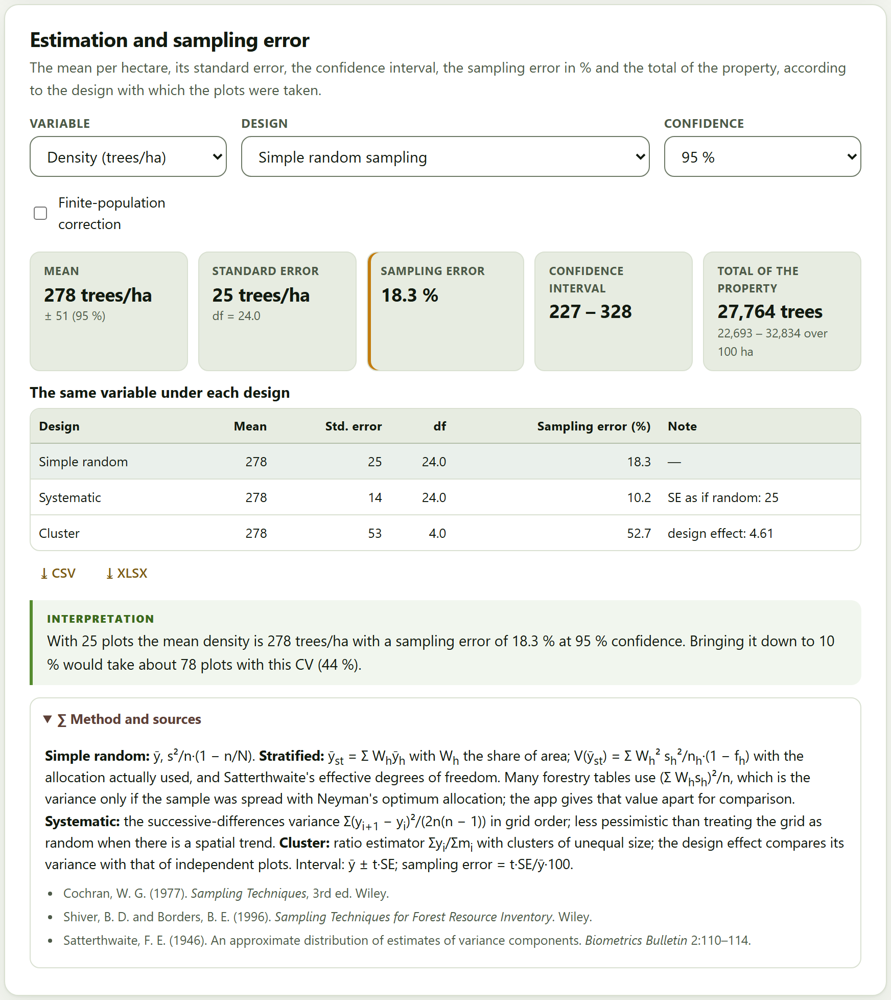
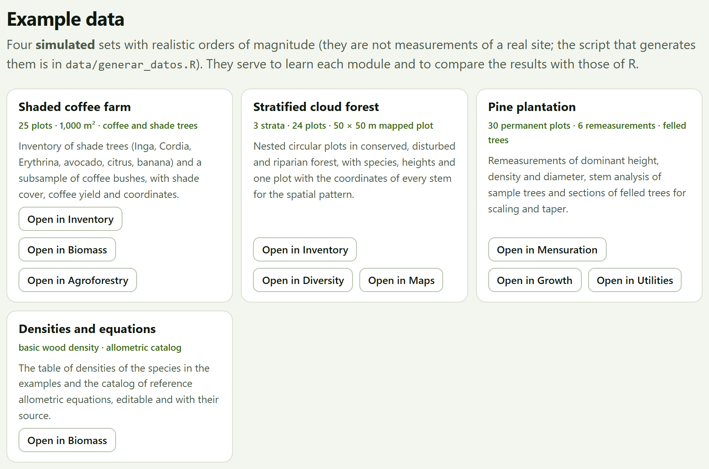
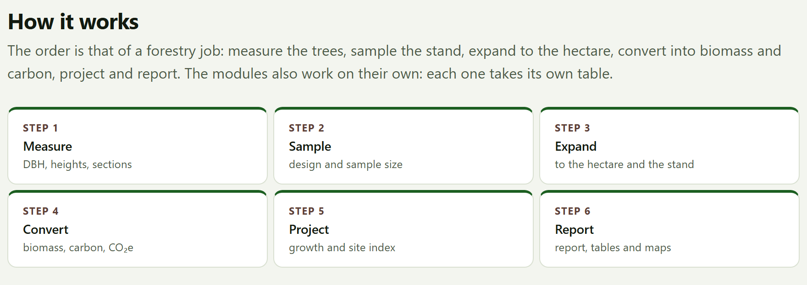

The program’s citation is the one the app itself gives, ready to copy in APA or BibTeX, in the How to cite section of the home page and of Block 10; every report ends with it. Besides the app, cite the equations and methods you used: every result names them in its Method and sources box. The Zenodo DOI 10.5281/zenodo.23876374 always resolves to the latest version; version 1.0.0 also has its own, 10.5281/zenodo.23876375. Code: https://github.com/luisangelbg/ForestPro · online app: https://luisangelbg.github.io/ForestPro/.
ForestPro runs entirely inside your browser. The inventories, plots, canopy photographs and projects you open are read on your computer and are never sent to any server: you can work with the inventory of a property, of a carbon project or of a thesis in progress without anything leaving your machine. The program uses no accounts and needs no connection to compute. The only request to the internet is voluntary: the online map background of Block 8, which comes switched off; if you switch it on, the browser requests only the map images of the visible area, never your data.
The illustrations, diagrams and screenshots in this manual are original: they were generated with the program itself or with code written for the manual. The example data sets used in the screenshots are simulated, except the wood density table: the species names are real, but the trees, plots and properties do not exist and are not measurements from any site or any publication.
The manual follows the same order as the app: ten numbered blocks that are worked through from top to bottom in the bar on the left. Each chapter explains one block and carries its number —Chapter 4 is Block 4, and its sections and figures are numbered 4.1, 4.2…—. The introduction has no number: its sections are I.1, I.2…
Each chapter opens with what the block solves in a forestry job, goes on with what is on screen in the order it appears, and closes with the rules for reading the result and the most common mistakes. You need not read it straight through: if all you need is the growing stock of a property with its sampling error, Chapter 3 is enough; if you also want the carbon, Chapter 4. Appendix B gathers the rules of all the blocks.
The block’s color appears in the opening of its chapter, in the number of each section, in the tab on the edge of the page and in the contents, and it is the same as in the strip on the cover.
| Block | Name in the app | What it does |
|---|---|---|
| 1 | Home | What the app does and does not do, the workflow of a forestry job, the nine modules, the four example data sets and how to cite |
| 2 | Tree mensuration | Diameter, basal area, volume by formulas and fitted equations, taper and the height–diameter relationship |
| 3 | Inventory and sampling | Sample size, sampling designs, expansion to the hectare, stand structure and density indices |
| 4 | Biomass and carbon | Allometric equations, wood density, above- and belowground biomass, necromass, carbon and CO₂e with their uncertainty |
| 5 | Growth and yield | Current and mean annual increments, growth models, site index and stand projection |
| 6 | Diversity and ecology | Richness, indices and Hill numbers, rarefaction, similarity among sites, vertical structure and spatial pattern |
| 7 | Agroforestry systems | Shade of coffee farms (by inventory or by hemispherical photograph), shade and yield, planting layouts and carbon budget |
| 8 | Maps | Plots and trees on the map, polygon areas, sampling grid, GPX/KML/GeoJSON export and interpolation |
| 9 | Forestry tools | Log and lumber scaling, board feet, form factors, conversions, sawmill yield and plantation cost |
| 10 | Report and project | The self-contained HTML report, the tables, the re-importable project and the citation |
Clarifications and practical tips that save time.
What can change your conclusions if it is overlooked.
The idea behind a computation, without unnecessary formulas.
A case with the program’s example data sets, with the numbers the app gives.
| If the result falls in this case… | then this is the recommended reading. |
These are guides for interpretation, not laws: what you know about the stand, about how it was measured and about what your management plan or carbon standard requires always comes first.
What usually fails when using the block —a column matched to the wrong field, a plot with the wrong area, an equation used outside its diameter range— and how to fix it.
| Written like this | Means |
|---|---|
| Load example | A button, field or menu of the app, with its text exactly as it appears on screen in English. |
| Block 3›Sample size | A path: open the first item and look for the second inside it. |
Ctrl + K, .csv | A key, a file name or a value typed as is. |
| DBH, H, g, G | Diameter at breast height, 1.30 m (cm), total height (m), the basal area of a tree (m²) and that of the stand (m²/ha). |
| AGB, BGB, C, CO₂e | Aboveground and belowground biomass (in kg per tree or Mg/ha), carbon and carbon dioxide equivalent (C × 44/12). |
| Mg/ha · 18.3% | Numbers are written with a decimal point and a comma for thousands, as the app writes them, and with the unit after a space; 1 Mg is a metric ton. On screen the app also puts a space before %. |
A forest inventory begins with the diameter tape and the hypsometer and ends in figures that someone else must be able to check: how much timber there is and how precisely it is known, how much biomass and carbon the stand holds, how fast it grows, how diverse it is, where each plot lies. ForestPro brings that work together on a single page, in the order in which it is done, and says at each step where every number comes from.
It is a program for forest inventory, mensuration, biomass, carbon and agroforestry that runs in the browser, with nothing to install. It takes a forestry job from the field sheet to the report: measure the trees, sample the stand, expand to the hectare, convert into biomass and carbon, project growth and report.
It is meant for those who collect and analyze inventories —forest technicians, thesis students, people in charge of management plans or carbon projects— and for coffee farms and other agroforestry systems, which seldom fit tools made for the forest. It scales trees and logs and fits volume, taper and height equations; expands the inventory with its sampling error under four designs; estimates biomass and carbon with a catalog of 31 allometric equations, wood density and its uncertainty by Monte Carlo; fits growth and site index curves and projects the stand; measures diversity, similarity among sites and the spatial pattern of the trees; characterizes the shade of a coffee farm by counting trees or from a canopy photograph; puts the plots on a map, with sampling grids and interpolation; and does the sums of the sawmill and the plantation.
Everything is computed with an engine written from scratch for this program, with no libraries by others, and every result comes with its method, its sources and an interpretation in words.

A good way to find out whether the program suits you is to see which questions it answers, and in which block.
| Question | Block |
|---|---|
| What volume does this tree, or this log, have? Which volume equation best describes my trees? | 2 9 |
| What is the stem diameter at any height, and how many merchantable logs does it yield? | 2 |
| How tall is a tree whose height was not measured? | 2 |
| How many trees, how much basal area and how much volume are there per hectare, and with what sampling error? | 3 |
| How many plots are needed for a given sampling error? | 3 |
| How are the diameters distributed, which species dominate, how dense is the stand? | 3 |
| How much biomass and carbon does the property hold, in each pool, and with what uncertainty? How much did it change between two inventories? | 4 |
| At what age should the stand be cut? What site quality does each plot have? How much volume will there be in ten years? | 5 |
| How many species are there and how many remain to be recorded? How alike are the sites? Are the trees clustered, random or regular? | 6 |
| How much shade does the coffee farm have, and at what shade does it yield most? How much carbon does it hold compared with a monoculture? | 7 |
| Where are the plots, how large is the property, where do I put the plots of a new inventory? | 8 |
| How many board feet come out of a log? What is the sawmill yield? Is the plantation profitable? | 9 |
| How do I hand everything in as a report, with its tables and methods, and how do I resume the work later? | 10 |
Everything that follows rests on six ideas. If you keep them in mind, many of the mistakes made when processing an inventory are no longer possible.
The starting point is almost always a table: one row per tree, plot, section, point or log. Every section that needs data has a data card that reads it from an example, a file, a pasted or hand-typed table, or the inventory already loaded in Block 3, and then matches its columns to the fields the method asks for (Section I.6).
| In | Format and where |
|---|---|
| Tables | .csv, .txt or .tsv files separated by commas, semicolons or tabs, with a decimal point or comma; .xlsx, .xlsm and .ods workbooks, choosing the sheet; or a table pasted from a spreadsheet, with its row of names. In every block |
| The inventory | Trees and, if available, plots with their shape, size, stratum and coordinates (Block 3); Blocks 2, 4, 6, 7 and 8 use it afterwards |
| Wood density | The app’s table, editable, or the full file of the global wood density database (Block 4) |
| Canopy photograph | A hemispherical photo or an ordinary upward photo (Block 7) |
| Geometries | GPX, KML or GeoJSON files, and tables of vertices with their latitude and longitude (Block 8) |
| Projects | A .json saved earlier by the app itself, which replays the steps taken (Block 10) |
| Out | Format |
|---|---|
| Figures | Curves, distributions, maps, dendrograms, ordinations and layouts, as SVG, PNG at 300 dpi or more, JPG or vector PDF, from the suite’s figure studio |
| Tables | Every result table as CSV or XLSX, next to it; all of them together in an XLSX workbook, one sheet per table, or in a ZIP of CSV files (Block 10) |
| Geometries | The plots, the sampling grid and the polygons as GPX, KML, GeoJSON or CSV, for the GPS or for a mapping program (Block 8) |
| Report | A self-contained HTML file —cover, summary, figures, tables, interpretations and, if asked, methods with their sources— that prints to PDF (Block 10) |
| Project and citation | The project as .json, to resume the work, and the citation in APA or as a forestpro.bib file (Block 10) |
The blocks also pass data to other apps of the suite: the similarity matrix of Block 6 is sent to ClusteringPro and PCAPro, and the soil carbon of Block 4 reads SoilPro’s layer tables.
Just a modern browser, in a version from the last few years, on a computer, tablet or phone. Nothing needs to be installed and no internet is required; the whole program fits in one folder.
index.html. It opens in the default browser, on the home page. It is the simplest way and works just like everything else: the computations and the example data sets are inside the program.Open ForestPro.bat. If your computer does not allow pages to be opened as local files, it starts a minimal server on your own computer (you can also run server.ps1 with PowerShell) and opens the app at http://localhost:9480.Preferences —the language, the light or dark theme, the animations— are stored in the browser itself and remembered the next time. Data are not: every time you open the app it starts empty, and to resume a job there is the .json project of Block 10. If you try to close the tab with data loaded or unsaved results, the app warns you.
The file tests/run.html runs the app’s 72 automated tests in the browser; all of them should come out green. The home page links to them at the bottom, together with this manual and the validation (Section I.9).
All the apps of the suite share the same bar, the same navigation and the same figure tools, so what you learn here serves you in the others.
On the left is the bar of the ten blocks; on the right, the In this block list, with the sections of the open block. All the blocks are open from the start and each one can be used on its own. At the foot of each block two buttons lead to the previous and the next one. When you change a control and the results are recomputed further down, a floating button appears that takes you back to the control you touched, and another one to go back to the top. Almost everything can also be done from the keyboard:
| Key | What it does |
|---|---|
Alt + ← · Alt + → | The previous or next block; in focused mode, the previous or next section (at the ends, the block) |
Ctrl + K | Search blocks, sections, controls and actions |
[ · ? · Esc | Collapse or show the block bar · show the list of shortcuts · close windows and panels |
← · → | Move along the block bar, with the focus on it |
+ · − | On the Block 8 map: zoom in and out |

1 2 3 4 5 6 7 8 9 10 11 12?).[ collapses it.Ctrl + K). A block, a section, a control or an action, by its name.
Ctrl + K) with “carbon” typed: it finds Block 4, the sections that name it in Blocks 1, 4 and 7, and the controls that carry it in their label, each with the block where it is. Enter goes to the chosen result.Almost every section that needs data receives it through the same piece, the data card, so you learn it once. From left to right: the list of examples for that section with Load example (a note below says what the chosen example contains); Open file…; Paste table; Type by hand, which opens an empty table with the columns the section asks for; Use the loaded inventory, in the sections that can work with the Block 3 inventory; and ⤓ Template, a CSV with the column names and three example rows.
After reading a file or a pasted table, the app matches the columns: those it recognizes by their name, in Spanish or English and with several synonyms, come already chosen; the others are chosen from a list, and the required ones carry an asterisk. Use these data loads them. Rows missing a required value are left out with a warning, and See the data shows what was loaded.

The results of every section have the same shape: a few tiles with the numbers that matter; the figures and tables, with their ⤓ CSV and ⤓ XLSX buttons; an interpretation in words, written with the numbers of your data; the warnings, when something deserves attention; and, at the end, the collapsible Method and sources box, with the formulas and the publications they come from.

Every figure in the app can be opened in the figure studio, a window shared by the suite where the texts, the font size, the legend and the colors are changed without touching the data, and which exports to the widths and resolutions of journals. Next to each figure, the ✎ button opens that figure’s editor, to change its titles, axes, series, legend and annotations. Figures are always exported with the colors of the light theme, even when you are working in the dark one. Chapter 10 explains it in depth.
To learn without data of your own, the app brings four data sets. Three are simulated with a fixed seed and realistic orders of magnitude: the species are real, but the trees, plots and properties do not exist, and they serve to explore the app and for the tests, not to describe any site. The fourth gathers reference tables. They open with the Open in … buttons of Block 1›Example data, which open the block and load the example, or from the list of examples of each data card.

| Example | Opens in | What it contains and what it is for |
|---|---|---|
| Shaded coffee farm | 3 4 7 | Twenty-five circular plots of 1,000 m² on five farms under four managements —rustic, traditional polyculture, commercial polyculture and shaded monoculture—: 719 shade trees with their DBH, height and crown, 250 coffee bushes, soil by layers, litter, shade and coffee yield, with coordinates. Inventory, biomass and carbon, shade and yield, maps. |
| Stratified cloud forest | 3 6 8 | Twenty-four nested circular plots in three strata —conserved, disturbed and riparian— with 1,830 trees; a 50 × 50 m plot with the coordinates of its 196 stems; 15 relascope points, deadwood transects and the property polygon. Stratified inventory, angle-count sampling, diversity and spatial pattern, necromass, maps. |
| Pine plantation | 2 5 9 | Thirty permanent plots measured six times, the stem analysis of six trees, 40 felled trees scaled by sections and a plot with missing heights. Scaling, volume and taper equations, height curves, growth, site index and carbon change. |
| Densities and equations | 4 | The basic wood density of 42 species or genera, taken from the global wood density database (public domain), and the catalog of 31 reference allometric equations, editable and with their source. |
How each data set was simulated —the models, the parameters, the seed— is written in data/LEEME.md, next to the script that generates them; the tables are also in data/ as CSV, with column names the app recognizes without matching. The text says “the example coffee farm”, not “the coffee farm”.
The blocks follow the order of a real forestry job. You need not go through all of them: those that do not apply are skipped, and each module can also be used on its own, with its own table. The How it works section of the home page sums it up in six steps.

What you load in Block 3 is available to biomass, diversity, agroforestry and the map, with the Use the Block 3 inventory or Use the loaded inventory buttons; Block 4 also uses its expansion factors. If you load another inventory, each block recomputes its part when you ask for it again, and the check mark in the bar marks the blocks that already have a result.
A computing program is worth what its numbers are worth. Every ForestPro computing engine runs the same in the browser as outside it, so each block was compared, with the example data sets, against independent reference implementations written by others in an open-source statistical computing language, and against formulas written separately where no implementation exists. Each comparison has its tolerance.
| Block | Topic | Comparisons | Disagreements |
|---|---|---|---|
| 2 | Tree mensuration | 287 | 0 |
| 3 | Forest inventory and sampling | 458 | 0 |
| 4 | Biomass and carbon | 5,015 | 0 |
| 5 | Growth and yield | 613 | 0 |
| 6 | Forest diversity and ecology | 1,222 | 0 |
| 7 | Agroforestry systems | 211 | 0 |
| 8 | Maps and light geoprocessing | 269 | 0 |
| 9 | Forestry tools | 252 | 0 |
| Total | 8,327 | 0 |
The comparisons also served to find errors and differences of convention, which were documented and, the errors, corrected before publishing. For example, the first version of the Block 4 Monte Carlo corrected the log-scale bias twice and gave a mean biomass 6.6% higher than the direct computation: the coefficient 0.0673 of Chave et al. (2014) already includes that correction. Or that in the IPCC (2006) root-to-shoot table the “50–150” class includes 150. The chapters say, where it matters, which convention the app follows and why. The details, block by block, are in the program’s tests/ folder.
Knowing where a tool ends is as useful as knowing what it does. The app’s home page says it in What it does and what it does not:
| It does not | Why, and what to do |
|---|---|
| Replace the local equation | The biomass equations of the catalog are references. If there is an equation for your species and region, add it to the Block 4 catalog and assign it to that species. |
| Act as a geographic information system | The map computes areas, grids and interpolations and exports GPX, KML and GeoJSON; for full spatial analysis, take those files to a mapping program. |
| Certify carbon | The carbon figures and their uncertainty serve studies and management plans; a carbon-market project also follows the rules of its standard. |
| Plan the sampling for you | It computes the sample size and draws the grid, but the design, shape and size of the plots, and the judgment for measuring, belong to the forester. |
| Individual-tree models or remote sensing | Growth is projected at stand level; the app does not work with satellite images or point clouds. |
| Save to a server | It connects to no database and saves nothing outside your computer: the work is kept in the .json project. |